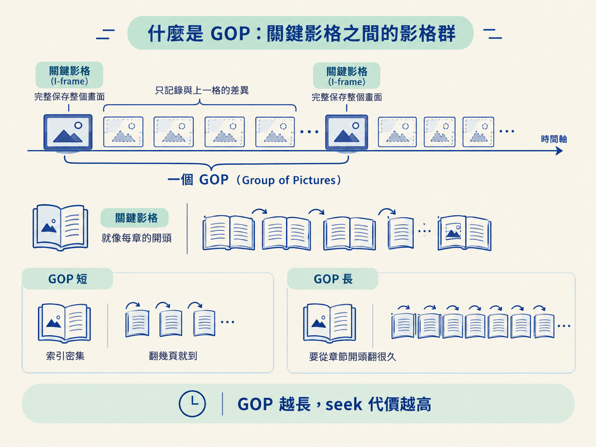
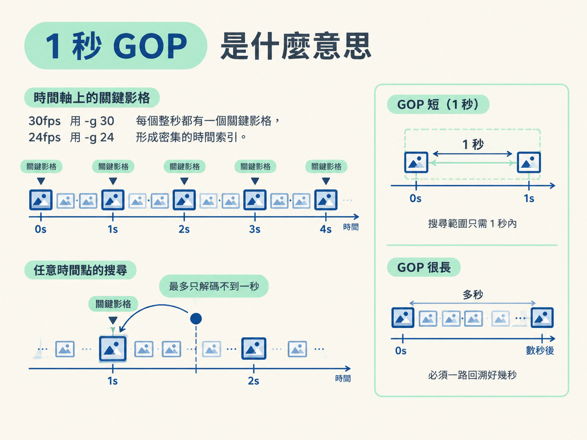

上一課完成的 cut.mp4，已經把不需要的片段剪掉，接縫也整理乾淨了。但在整條 pipeline 裡，它還只是「剪輯完成」的影片，下一關還要交給 HyperFrames 做動畫。
HyperFrames 會讀逐字稿，找出某句話在什麼時間點說出來，再把對應的卡片或動畫放到那一刻的畫面上。假設重點落在第 7.3 秒，它就必須真的取出第 7.3 秒那一格，而不是拿一個大概接近的畫面。
這裡容易出現一個看似奇怪的問題：畫面明明在影片裡，卻不一定能快速、精準地取出來。原因藏在影片的壓縮方式，也就是 GOP。這一課要建立的心智模型很簡單：
影片不是把每一格都完整保存。HyperFrames 要逐格取畫面，因此關鍵影格必須夠密；把 GOP 控制在 1 秒內，才能把字幕、逐字稿與動畫牢牢對在同一個時間點。
你現在手上有了 cut.mp4，片段接得乾乾淨淨。接下來要交給 HyperFrames 做動畫：它會讀逐字稿，知道「這句重點在第 7.3 秒被講出來」，於是要在畫面上第 7.3 秒的位置放一張卡片。
問題是，HyperFrames 不是像一般播放器那樣從頭順順播放。它會逐格去要畫面，直接跳到第 7.3 秒，抓出那一格來合成。
如果影片裡的關鍵影格隔得太遠，HyperFrames 就不能直接拿到第 7.3 秒。它必須先回到前面最近的關鍵影格，再一格一格解碼到 7.3 秒。輕則速度變慢，重則取出的時間點不夠精準，結果就是字幕和動畫各走各的，像兩支沒有對準節拍的樂團。
所以這一課要處理的，不是畫面好不好看，而是影片能不能被精準取用：我們要認識 GOP，並把它控制在 1 秒。
影片為了節省空間，不會把每一格都完整儲存。它會每隔一段距離存一個「完整畫面」，這個完整畫面叫做關鍵影格（keyframe，也常叫 I-frame）。
關鍵影格後面的幾格，通常只記錄「和上一格相比，哪裡變了」，而不是重新保存整個畫面。這種做法能讓檔案小很多，但這也有一個缺點：當你要跳到某個不是關鍵影格的位置，解碼器必須先回到前面最近的關鍵影格，再把中間每一格算出來。
從一個關鍵影格開始，一直到下一個關鍵影格之前，這一段影格合起來就叫做一個 GOP（Group of Pictures，影格群）。GOP 的長度，基本上就是兩個關鍵影格之間隔了幾格。
可以把它想成一本書的章節索引：
因此，GOP 雖然只是影片的壓縮設定，卻會直接決定隨機 seek 要付出多少代價。

手機或相機錄下的原始檔，通常會把 GOP 設得比較長，常見是兩秒、五秒，甚至更久才放一個關鍵影格。對「從頭播到尾」來說，這完全沒問題，因為播放器本來就會依序解碼。
但對「跳到任意時間點取一格」來說，情況就不同了。你可能只是想要一個畫面，卻得先解碼前面好幾秒的影格。HyperFrames 的逐格 seek 正是在做這種隨機取用，所以它要的影片，索引必須夠密。
所謂 1 秒 GOP，就是要求來源影片每秒至少有一個關鍵影格。但一秒究竟有幾格，要看影片的畫面更新率：
| 畫面更新率 | GOP 設定 | 代表的間隔 |
|---|---|---|
| 30fps | -g 30 | 30 格，約 1 秒 |
| 24fps | -g 24 | 24 格，約 1 秒 |
這樣一來，不管 HyperFrames 要哪個時間點，它最多只需要往回解碼不到一秒的影格。seek 的搜尋範圍就被框在一秒之內，不會因為前一個關鍵影格離得太遠而一路回溯。

不過，光設定 GOP 大小還不夠保險。有些編碼器會因為場景變化自行插入關鍵影格，也可能因為壓縮策略而拉長間隔。因此除了設定 GOP 大小，還要再加一道強制規則：每滿一秒就插入一個關鍵影格，把這個承諾固定下來。
下面是範本裡用來產生 HyperFrames 可用影片的指令。它把影片編碼、畫面更新率、GOP 與關鍵影格規則放在一起；執行後會產生 out.mp4。
ffmpeg -i in.mp4 -c:v libx264 -preset fast -crf 18 \
-r 30 -g 30 -keyint_min 30 \
-force_key_frames "expr:gte(t,n_forced*1)" \
-c:a aac -b:a 192k -movflags +faststart out.mp4| 參數 | 作用 |
|---|---|
-c:v libx264 | 選用 H.264 視訊編碼器。 |
-crf 18 | 控制畫質；數字越小，畫質通常越好，檔案也越大。18 屬於高品質。 |
-r 30 | 把輸出影片的畫面更新率設為 30fps。 |
-g 30 | 把 GOP 的最大長度設為 30 格；在 30fps 下，正好約為一秒。 |
-keyint_min 30 | 讓兩個關鍵影格之間至少隔 30 格，避免關鍵影格插得過於頻繁。 |
-force_key_frames "expr:gte(t,n_forced*1)" | 每當影片時間到達下一個整秒，就強制插入一個關鍵影格。 |
-c:a aac -b:a 192k | 使用 AAC 編碼音訊，位元率設為 192kbps。 |
-movflags +faststart | 把索引移到檔案開頭，讓串流與 seek 更快開始。 |
其中真正把「每秒一個關鍵影格」釘死的是 -force_key_frames "expr:gte(t,n_forced*1)"。它的意思是：只要影片時間 t 到達 1 秒的整數倍，就強制標記一個關鍵影格。
-g 30 與 -keyint_min 30 則像是 GOP 的範圍控制。它們讓 GOP 穩定落在一秒附近，不會完全交給場景變化或其他壓縮策略決定。
看到這裡，你可能會想：既然關鍵影格越密越好，那乾脆每一格都存成關鍵影格，seek 不就最快了？
確實可以，但檔案會明顯變大。原因是每個關鍵影格都要保存完整畫面；相較之下，只記錄畫面差異的影格會省下許多空間。密集關鍵影格的代價，就是檔案體積與編碼時間增加。
1 秒 GOP 是一個折衷點：對 HyperFrames 的逐格算圖來說，它已經足夠精準，檔案又不至於膨脹到失控。你放棄了一部分壓縮效率，換來的是隨機取畫面時更穩定的時間位置。
這個格式要求不是可有可無的建議，缺了它可能直接造成渲染錯誤。HyperFrames 的規則明文要求來源影片使用緊密的關鍵影格，也就是 1 秒 GOP。缺少這個條件，逐格算圖就可能出問題。
問題的根源不在於畫面是否漂亮，而在於畫面和時間是否對得上：如果取出的畫面不是逐字稿所指的那一刻，字幕與動畫就會一起偏掉。
這一課完成後，cut.mp4 會被重新編碼成適合 HyperFrames 逐格取用的 out.mp4。你可以把兩者的差異記成一句話：
cut.mp4 解決的是「哪些片段要留下來」。out.mp4 進一步解決的是「留下來的畫面，能不能在正確時間被取出來」。當 30fps 影片使用 -g 30，並搭配 -force_key_frames 強制每秒插入關鍵影格，HyperFrames 就有了密集的時間索引。字幕、逐字稿和動畫因此能掛在同一條時間軸上；檔案雖然會稍微變大，卻換來逐格合成所需要的精準度。
HyperFrames 會逐格 seek，直接跳到任意時間點取出畫面。影片靠 GOP 壓縮，關鍵影格越稀疏，隨機取用就越慢、越不準，所以來源影片必須壓成 1 秒 GOP。30fps 使用-g 30、24fps 使用-g 24，再搭配-force_key_frames，強制每滿一秒插入一個關鍵影格。這是讓字幕與動畫精準對齊所付出的必要成本。
現在你手上的影片，是剪好的成品，也具備密集的時間索引，能交給 HyperFrames 精準取格。接下來，流程會回到剪輯驗收：先確認並排稿與剪輯計畫，再逐一檢查接縫是否切掉字句或造成爆音，確保這支影片能安全進入後續製作。